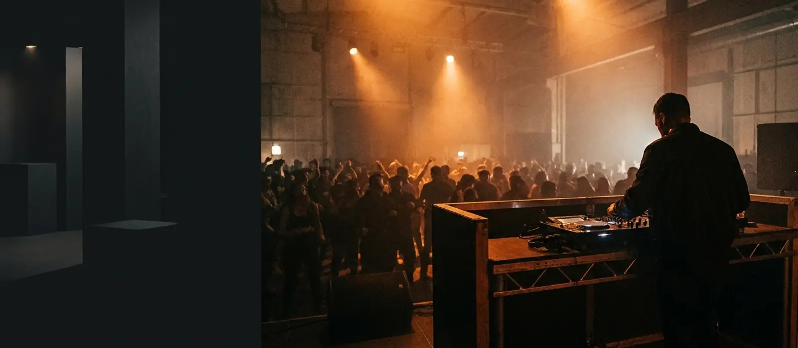

BPM and key finder
Drop songs or a whole folder, get BPM, key and Camelot code. Runs in the browser; CLI for big crates.
Detector de BPM y tonalidad · Detector de BPM e tom · ES · PT
npx github:hablamusic/bpm-key-finder ~/Music
Free tools for DJs from HablaMusic: find BPM and key, mix by the Camelot wheel, and generate DJ-ready tracks with tested AI prompts. They run in your browser, and the code is on GitHub.
Drop songs or a whole folder, get BPM, key and Camelot code. Runs in the browser; CLI for big crates.
Detector de BPM y tonalidad · Detector de BPM e tom · ES · PT
npx github:hablamusic/bpm-key-finder ~/MusicTap a key to see what mixes with it, convert any notation, check a mashup, plan a harmonic set.
Rueda Camelot · Roda Camelot · ES · PT
npx github:hablamusic/camelot-wheel "A minor"60 prompts for intros, outros, remix beds, drum tools and build-drops in 12 genres; 19 tested and measured.
Prompts de IA para DJ (reggaetón, dembow, cumbia…) · ES · PT
data/prompts.json · CC BY 4.0The same code runs on hablamusic.com, in these pages and in your terminal, so you can check how a BPM or a key was found. Numbers come from files in the repos: for example, on 19 AI-generated tracks the BPM matched essentia 2.1 within 1 BPM 17 times, and the AI followed the prompt's tempo but almost never its key.